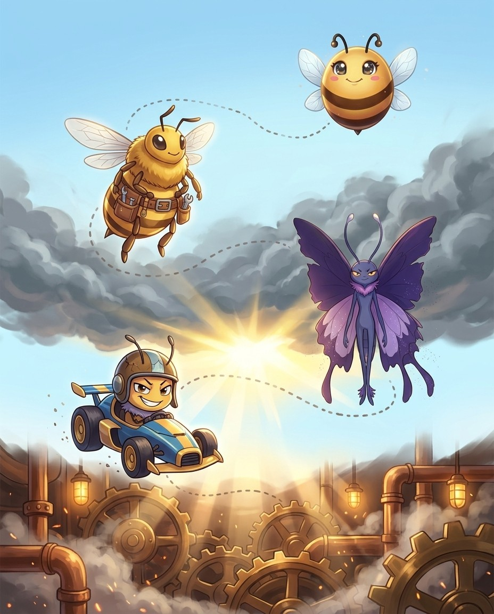
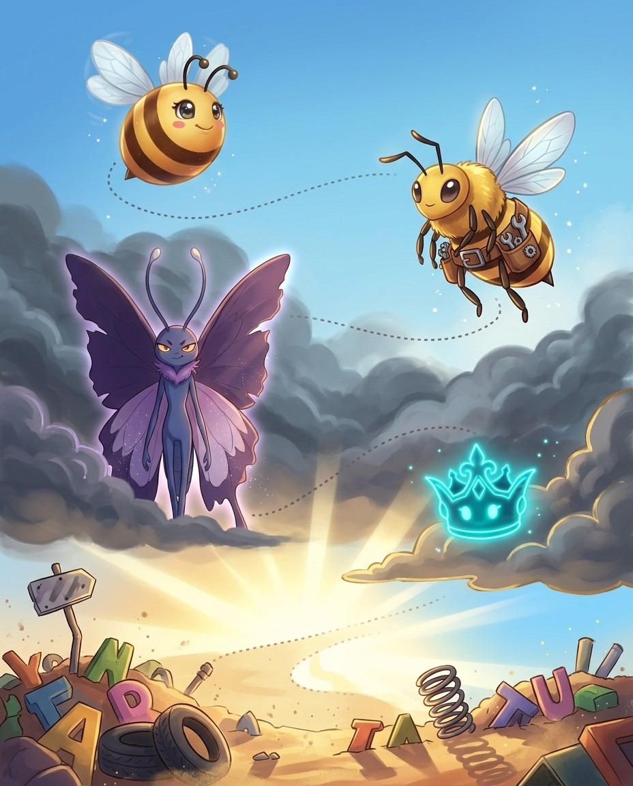
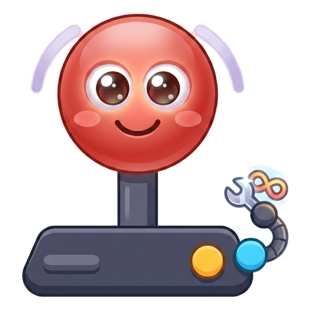
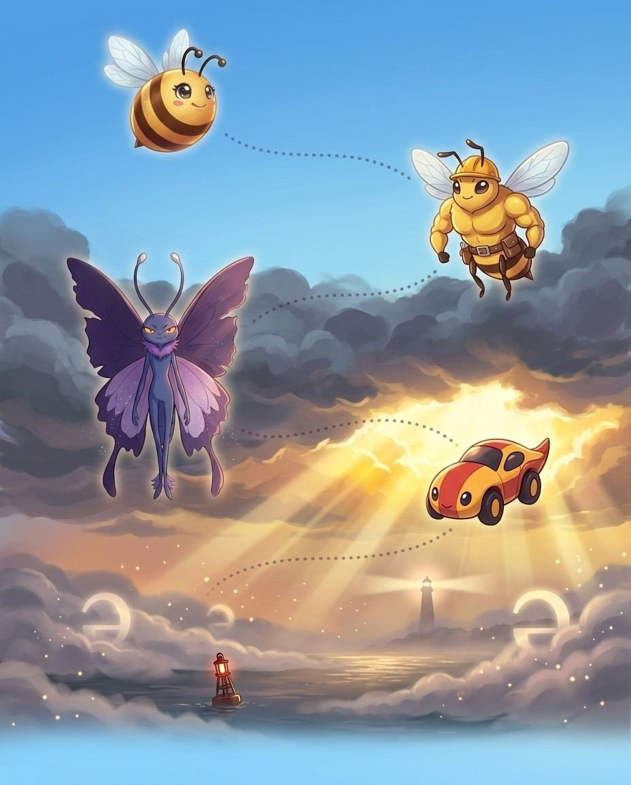
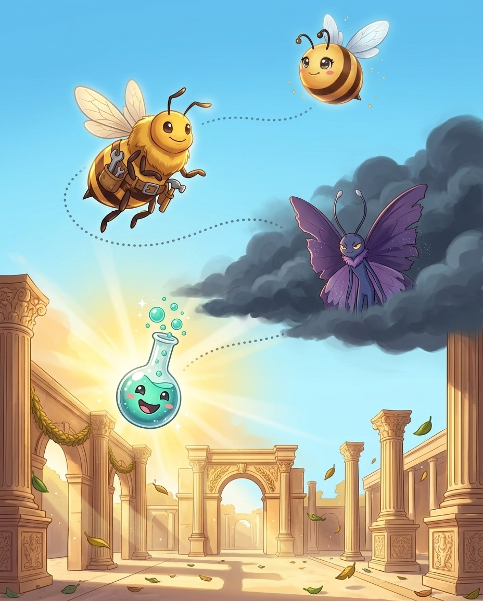

11 chapters164 practice wordsquizzes & puzzles throughout
Bizzy & Drone in the Engine Room Roots are machine parts. In the Engine Room, Drone shows you how they fit.
Root Camp: LatinHow this book works
Five moves. That's the whole system.
Drone here. Eleven Latin root families, drilled — that's the route. The crew and I will keep it moving; you keep the pencil moving.
1
Read the story
Each chapter opens as a storyboard. Vex sets the trap; the crew talks you out of it.
2
Steal the pro move
The dark box is how a champion thinks on stage. It works on brand-new words too.
3
Spell out loud, then write
Say it, spell it aloud, write it. The order matters — it is how the stage will ask for it.
4
Pass the checkpoint
A short quiz straight from the Word Map. Circle your answers; the back of the book keeps the truth.
5
Play the puzzle, hunt the Big List
Every chapter ends in a game built from its own words, and the back holds every word in the book. Circle what you own.
🔊 Grown-ups: every chapter is narrated, and every word recorded, in the Bizzing Bee app
the Engine Room
Bizzing Bee · Root Camp: Latin1
Root Camp: LatinThe cast
Bizzy — and this book's guide, Drone
The crew of Vol. 6
Every book travels with a crew. These nine hand you puzzles, host the checkpoints and occasionally get a line right before you do.
Bizzy — The little bee who spells the world back together, one petal at a time. · Drone — Steady and sure, Drone Dan keeps the hive humming.
Crash
OVR 59
Speller of the Speedway
Walks away from every wipe-out, grinning.
Bubbly Beaker
OVR 50
Rookie of the Lab
Bubbling with big ideas and bigger words.
Turbo
OVR 57
Speller of the Speedway
Built for speed, tuned for wins.
Neon King
OVR 79
Grandmaster of the Arcade
Rules the arcade in electric light.
Volt
OVR 67
Champion of the Lab
A jolt of pure spelling energy.
Cabinet Ghost
OVR 66
Speller of the Arcade
Haunts the maze, chasing the next word.
Rainbow Cart
OVR 81
Champion of the Arcade
Zooms across the finish in every colour.
Rally
OVR 57
Rookie of the Speedway
Reads the road and never misses a turn.
And the other one
Vex the word-moth sneaks through every chapter, planting the exact mistakes real spellers make. Spot the trap before you step in it.
Bizzing Bee · Root Camp: Latin2
WELCOME TO
The Engine Room
Roots are machine parts. In the Engine Room, Drone shows you how they fit.
Bizzing Bee · Root Camp: Latin3
Chapter 1 · aud (hear)Story · ★★☆
1
Latin Root Families
aud (hear)
📍 the Engine Room

BizzyMeet the root aud, spelled A, U, D. It comes from Latin audire,…
UH-OH!
Drone · Vex is circlingHere is a famous trap. Audacious starts with the same A, U, D,…
GOT IT!
CrashFor spelling, remember audible ends I, B, L, E, not able, because it…
VoltAn audience is the people who come to hear. An auditorium is a…
🔊 narrated in the appturn the page — the whole trick, explained →
Bizzing Bee · Root Camp: Latin4
Chapter 1 · aud (hear)The idea · ★★☆
The big idea
Latin audire = to hear. Everything about hearing and listening uses this root — from the audience that listens to audacious daring (a false friend: same letters, different root!).
Exception. audire = to hear; -um = Latin neuter ending; 5 syllables; aw-dih-TOR-ee-um
Origin. Latin
Root. Latin auditorium = place for hearing
The Root
Latin audire = to hear. Audible = able to be heard. Audience = those who come to hear. Auditorium = a place for hearing. Audit = originally an oral examination (hearing accounts). Audiovisual = combining sound and sight. All hearing-related — …
The Audacious Trap
⚠️ Audacious shares aud- BUT comes from audere = to dare (different Latin root!). Audible (hearing) ≠ audacious (daring). Both share A-U-D at the start. The definition is the only way to know which root you are dealing with. This is a famous b…
aud- in Legal/Formal Contexts
Audit = an official hearing/examination of financial records. Auditor = one who audits. Judicial — NOT from aud-. Inaudible (in- + audible) = cannot be heard. Audition = a hearing/trial performance. Audiometry (aud- + -metry) = measurement of …
Subaudition
A rare but beautiful word: subaudition (sub- + audit + -ion) = understanding something that is not explicitly stated — the meaning you "hear under" the words. Also: subaudible = below the threshold of hearing. These show how aud- combines with…
Vex alert
AUDIBLE uses -IBLE not -ABLE: you need your EAR (AUD) to make it audIBLE — 'I' hear it!
Check yourself
Cover the page and spell audible · audience · auditorium out loud. Miss one? Read the idea again — it's faster than guessing twice.
Bizzing Bee · Root Camp: Latin5
Chapter 1 · aud (hear)Practice · ★★☆
Say it. Spell it out loud. Write it.
🔊 every word has real audio in the app
audible
/ AH-duh-buhl / · /ˈɑdəbəl/
a football play is changed orally after both teams have assumed their positions at the line…
hook: AUDIBLE uses -IBLE not -ABLE: you need your EAR (AUD) to make it audIBLE — 'I' hear it!
he spoke in an ▁▁▁ whisper
audience
/ AH-dee-uhns / · /ˈɑdiəns/
a gathering of spectators or listeners at a (usually public) performance
hook: An AUDIence uses their ears — like an AUDIO system
The ▁▁▁ burst into applause when the young violinist finished her breathtaking performance.
auditorium
/ aw-duh-TAW-ree-uhm / · /ɔdəˈtɔriəm/
the area of a theater or concert hall where the audience sits
hook: An audiTORIUM is a place where audiences hear — keep AUDI at the front, like listening.
The entire student body packed into the ▁▁▁ to watch the final spelling bee championship.
audit
/ AW-diht / · /ˈɔdɪt/
an inspection of the accounting procedures and records by a trained accountant or CPA
hook: An AUDIT is when the accountant 'hears' the books — Latin 'he heard': A-U-D-I-T, just five …
he made an ▁▁▁ of all the plants on his property
audition
/ ah-DIH-shuhn / · /ɑˈdɪʃən/
the ability to hear; the auditory faculty
hook: An audITION is your chance to be heard — hear the word 'ITION' as you perform.
his hearing was impaired
audiometry
the Engine Room
Bizzing Bee · Root Camp: Latin6
Chapter 1 · aud (hear)Rapid round · ★★☆
More ammo — one line each.
inaudible/ih-NAW-duh-buhl/ impossible to hear; imperceptible by the ear
audiovisual/aw-dee-oh-VIH-zhoo-uhl/ materials using sight or sound to present information
auditor/AW-dih-ter/ someone who listens attentively
subaudition/sub-aw-DISH-un/ The mental act of understanding or supplying something that is …
Lock them in
Pick 4 words from above. Say each one as you write it — three times, no shortcuts. The third copy is the one your hand remembers.
the Engine Room
Bizzing Bee · Root Camp: Latin7
Chapter 1 · aud (hear)Checkpoint · ★★☆
Turbo · Speller of the Speedway runs the checkpoint
Do you own the idea?
Same questions the app asks at this stop on the Word Map. Circle, then check the back. Turbo's power is Mind Palace — borrow it.
1. Which of these is the big idea of “aud (hear)”?
ALatin audire = to hear.
BLatin com- = with, together.
COld English/Latin un- = not (before adjectives) or reverse the action of (before verbs).
DThe most common suffix in English — from Latin -tionem.
2. Which word belongs to this chapter's family?
Achocolate
Baudible
Cimpeccable
Ddiaphanous
3. The card “The Root” says…
A⚠️ Audacious shares aud- BUT comes from audere = to dare (different Latin root!). Audible (hear…
BA rare but beautiful word: subaudition (sub- + audit + -ion) = understanding something that is …
CLatin audire = to hear. Audible = able to be heard. Audience = those who come to hear. Auditori…
DAudit = an official hearing/examination of financial records. Auditor = one who audits. Judicia…
4. “▁▁▁ uses -IBLE not -ABLE: you need your EAR (AUD) to make it ▁▁▁ — 'I' hear it!” — which word is this hook about?
Aaudience
Baudible
Caudit
Dauditorium
Dictation round
Hand this page to anyone nearby. They read the words from the answer key (Ch. 1 dictation, at the back) — you write, no peeking.
1.
2.
Bizzing Bee · Root Camp: Latin8
Chapter 1 · aud (hear)Game · ★★☆
Bubbly Beaker's puzzle page
Crossword
I own this
1
2
3
4
5
6
7
8
9
10
Across
3.
6. materials using sight or sound to present information
9. a football play is changed orally after both teams have assumed their posit…
10. a gathering of spectators or listeners at a (usually public) performance
Down
1. someone who listens attentively
2. the area of a theater or concert hall where the audience sits
4. The mental act of understanding or supplying something that is implied but …
5. the ability to hear; the auditory faculty
7. impossible to hear; imperceptible by the ear
8. an inspection of the accounting procedures and records by a trained account…
💬
Bee Break · someone said it better
“The mind is the limit. As long as the mind can envision that you can do something, you can do it.”
— Arnold Schwarzenegger, athlete and actor
Bizzing Bee · Root Camp: Latin9
Chapter 2 · dict / dic (say / speak)Story · ★★☆
2
Latin Root Families
dict / dic (say / speak)
📍 the Paper Mountains
BizzyMeet the root dict, spelled D, I, C, T. It comes from Latin…
UH-OH!
Drone · Vex is circlingWatch out for indict. It is spelled I, N, D, I, C, T,…
GOT IT!
Bubbly BeakerHere is a neat pair. Benediction is bene, good, plus dict, a good…
Cabinet GhostTake verdict. Ver means truth, plus dict means said. A verdict is what…
🔊 narrated in the appturn the page — the whole trick, explained →
Latin dicere = to say. One of the most productive roots in legal, political, and everyday English. Every time something is said officially, pronounced, or declared, dict- is likely present.
The pro move
MALEDICTION
Say it. mal-eh-DIK-shun
Spell it. M · A · L · E · D · I · C · T · I · O · N
Exception. mal- = bad; -dict- = say; -ion = noun; contrast with benediction = good saying; stress: mal-uh-DIK-shun
Origin. Latin
Root. Latin: maledico (Latin)
The Root
Latin dicere = to say. Diction = the way one says words = enunciation. Dictate = say officially. Edict (e- = out + dict) = what is said officially = a decree. Indict (in- + dict) = formally accuse (the c is silent in English: /in-DYTE/!). Verd…
Bene- and Male-diction
Benediction (bene + dict + -ion) = a good saying = a blessing. Malediction (male + dict + -ion) = a bad saying = a curse. These are structural opposites built from the same dict- root. In a bee: benediction = B-E-N-E-D-I-C-T-I-O-N; malediction…
Contradict & Predict
Contradict (contra- = against + dict) = say against = dispute. Predict (pre- + dict) = say before = forecast. Interdict (inter- + dict) = say between/forbid. Valediction (vale = farewell + dict) = a farewell saying. Jurisdiction (juris = law +…
Abdicate vs Dedicate
⚠️ Neither abdicate nor dedicate is from dicere = say. Abdicate comes from abdicare = renounce. Dedicate = dedicare = set apart for a purpose. These look like dict- words but use a different Latin root dicare (not dicere). The definition at th…
Vex alert
Drop the E before adding -ING: DEDICATING, not dedicateing.
Sound trap
indict sounds like indite — at the mic, always ask for the meaning.
Check yourself
Cover the page and spell diction · dictate · edict out loud. Miss one? Read the idea again — it's faster than guessing twice.
BizzyMeet the root duc, spelled D, U, C. It comes from Latin ducere,…
UH-OH!
Drone · Vex is circlingFor spelling, the root is duc before vowels, as in reduce and educate,…
GOT IT!
TurboTake educate. The e means out, plus duc means lead. To educate is…
Rainbow CartThe prefix sets the direction. Abduct uses ab, away, to lead away by…
🔊 narrated in the appturn the page — the whole trick, explained →
Bizzing Bee · Root Camp: Latin16
Chapter 3 · duc / duct (lead)The idea · ★★☆
The big idea
Latin ducere = to lead. From education (leading out knowledge) to seduction (leading aside), this root describes every form of leading, guiding, and conducting.
Latin ducere = to lead. Induct = lead into a position. Educate (e- = out + duc) = lead knowledge outward from within. Introduce (intro- = within + duce) = lead into the presence of. Conduct (con- = together + duct) = lead together. Reduce (re-…
Duke & Duchess
Duke = dux = the leader. From ducere → dux → Old French duc → English duke. A duke is literally "a leader." Aqueduct (aqua = water + ductus) = a structure that leads water. Viaduct (via = road + ductus) = a structure that leads a road across a…
Abduct, Deduct, Seduce
Abduct (ab- = away) = lead away by force. Deduct (de- = from) = lead/take from the total. Seduce (se- = aside) = lead aside = lead astray. Traduce (tra- = across) = lead across = to slander. Adduce (ad- = toward) = lead toward = to cite as evi…
Conductor & Semiconductor
Conductor = one who leads (an orchestra or electricity). Semiconductor (semi- = half) = a material that half-conducts electricity (silicon in computer chips). Nonconductor = does not conduct. Superconductor (super- = above) = conducts with zer…
Vex alert
AquEDUCT not aquADUCT — the E is the bridge that carries water, just like the structure itself.
Check yourself
Cover the page and spell induction · educate · conduct out loud. Miss one? Read the idea again — it's faster than guessing twice.
Bizzing Bee · Root Camp: Latin17
Chapter 3 · duc / duct (lead)Practice · ★★☆
Say it. Spell it out loud. Write it.
🔊 every word has real audio in the app
induction
/ ih-NDUH-kshuhn / · /ɪˈndʌkʃən/
a formal entry into an organization or position or office
hook: INDUCTION has the word DUCT in it — like a duct leading you IN to a new role.
his initiation into the club
educate
/ EH-juh-kayt / · /ˈɛdʒəkeɪt/
give an education to
hook: EDUCATE has a DUCK in the middle — a teacher leads ducklings out to learn.
We must ▁▁▁ our youngsters better
conduct
/ KAH-nduhkt / · /ˈkɑndəkt/
manner of acting or controlling yourself
hook: CONDUCT — a CONDUCTor LEADS the orchestra. CON+DUCT, no extra letters hidden inside.
You cannot ▁▁▁ business like this
reduce
/ ruh-DOOS / · /rəˈdus/
cut down on; make a reduction in
hook: The DUKE led things BACK — reDUCE ends in DUCE, like a duke leading things down.
▁▁▁ your daily fat intake
introduce
/ ih-ntruh-DOOS / · /ɪntrəˈdus/
cause to come to know personally
hook: Introduce uses -duce like 'conduct' or 'deduce'—you LEAD someone IN.
permit me to acquaint you with my son
abduct
/ a-BDUHKT / · /æˈbdʌkt/
To take someone away by force or illegally, such as in a kidnapping; also, in anatomy, to m…
hook: ab- (away) + duct (lead): to lead someone away against their will
The villain's plot to ▁▁▁ the young princess was foiled by the brave knights who had been standing guard.
the Wide Strait
Bizzing Bee · Root Camp: Latin18
Chapter 3 · duc / duct (lead)Rapid round · ★★☆
More ammo — one line each.
deduct/dih-DUHKT/ make a subtraction
seduce
traduce/truh-DYOOS/ means to slander or defame
adduce/ah-DOOS/ advance evidence for
aqueduct/A-kwuh-duhkt/ a conduit that resembles a bridge but carries water over a vall…
viaduct/VEYE-uh-duhkt/ bridge consisting of a series of arches supported by piers used…
conductor/kuh-NDUH-kter/ the person who leads a musical group
semiconductor/seh-mee-kuh-NDUH-kter/ a substance as germanium or silicon whose electrical conductivi…
ductile/DUH-ktuhl/ easily influenced
inductee/ih-nduh-KTEE/ a person inducted into an organization or social group
Lock them in
Pick 4 words from above. Say each one as you write it — three times, no shortcuts. The third copy is the one your hand remembers.
the Wide Strait
Bizzing Bee · Root Camp: Latin19
Chapter 3 · duc / duct (lead)Checkpoint · ★★☆
Volt · Champion of the Lab runs the checkpoint
Do you own the idea?
Same questions the app asks at this stop on the Word Map. Circle, then check the back. Volt's power is Fast Forward — borrow it.
1. Which of these is the big idea of “duc / duct (lead)”?
ALatin ducere = to lead.
BOld English/Latin un- = not (before adjectives) or reverse the action of (before verbs).
CThe most common suffix in English — from Latin -tionem.
DLatin com- = with, together.
2. Which word belongs to this chapter's family?
Aimpeccable
Bchocolate
Cdiaphanous
Dinduction
3. The card “The Root” says…
AAbduct (ab- = away) = lead away by force. Deduct (de- = from) = lead/take from the total. Seduc…
BLatin ducere = to lead. Induct = lead into a position. Educate (e- = out + duc) = lead knowledg…
CConductor = one who leads (an orchestra or electricity). Semiconductor (semi- = half) = a mater…
DDuke = dux = the leader. From ducere → dux → Old French duc → English duke. A duke is literally…
4. “▁▁▁ has the word DUCT in it — like a duct leading you IN to a new role.” — which word is this hook about?
Aeducate
Breduce
Cinduction
Dconduct
Dictation round
Hand this page to anyone nearby. They read the words from the answer key (Ch. 3 dictation, at the back) — you write, no peeking.
1.
2.
Bizzing Bee · Root Camp: Latin20
Chapter 3 · duc / duct (lead)Game · ★★☆
Neon King's puzzle page
Scramble & rescue
I own this
Unscramble
utcoorncd
uadcbt
sdceeu
rducaet
odunrecti
dicneetu
Rescue the vowels
c_nd_ct
d_d_ct
d_ct_l_
tr_d_c_
v__d_ct
_dd_c_
🎈
Bee Break · idiom to drop at dinner
when the winds of change blow, some build walls and others build windmills
when things change, you can resist or find a way to benefit
the Wide Strait
Bizzing Bee · Root Camp: Latin21
Chapter 4 · fer (carry / bear)Story · ★★☆
4
Latin Root Families
fer (carry / bear)
📍 the Word Junkyard

BizzyMeet the root fer, spelled F, E, R. It comes from Latin ferre,…
UH-OH!
Drone · Vex is circlingSpelling trap. When stress lands on the fer, you double the r. Prefer…
GOT IT!
Neon KingScience loves fer. A conifer carries cones, so it is a cone bearing…
RallyTake transfer. Trans means across, plus fer means carry, so to transfer is…
🔊 narrated in the appturn the page — the whole trick, explained →
Bizzing Bee · Root Camp: Latin22
Chapter 4 · fer (carry / bear)The idea · ★★☆
The big idea
Latin ferre = to carry, to bear. One of the most productive Latin roots — it appears in scientific (conifer, fertile), legal (transfer), and everyday (prefer, suffer) vocabulary.
The pro move
EFFERVESCE
Say it. —
Spell it. E · F · F · E · R · V · E · S · C · E
Say it again. —
Syllables. e · f · f · e · r · v · e · s · c · e
Sounds → Letters. [ef=EF] [fer=FER] [VES=VES]
Exception. ef- = ex- before f (assimilation); -ferv- = boil; -esce = becoming; stress: ef-er-VES
Origin. —
Root. —
The Root
Latin ferre = to carry, bear. Transfer (trans- = across) = carry across. Confer (con- = together) = carry/bring together = discuss. Defer (de- = away) = carry away = postpone or show respect. Infer (in- = toward) = carry toward a conclusion. P…
Fertile (fertilis = bearing fruit) = producing abundantly. Fertility = the state of being productive. Fertilize = make fertile. Infertile (in- + fertile) = unable to bear/produce. Fertilizer = substance that makes soil more productive. All fro…
Vex alert
You PREFER what you put beFORE — don't mix up the R and E: pre-FER, not per-fer.
Check yourself
Cover the page and spell transfer · confer · defer out loud. Miss one? Read the idea again — it's faster than guessing twice.
Bizzing Bee · Root Camp: Latin23
Chapter 4 · fer (carry / bear)Practice · ★★☆
Say it. Spell it out loud. Write it.
🔊 every word has real audio in the app
transfer
/ tra-NSFUR / · /træˈnsfʌr/
the act of moving something from one location to another
hook: To transFER is to FERRY something across — FER sounds like FERRY, carrying goods over water.
the best student was a ▁▁▁ from LSU
confer
/ kuh-NFUR / · /kəˈnfʌr/
have a conference in order to talk something over
hook: When you conFER, you bring ideas toFERther — FER is the engine that carries meaning.
We ▁▁▁ about a plan of action
defer
/ dih-FUR / · /dɪˈfʌr/
hold back to a later time
hook: To deFER is to carry a decision FURther away — hear the FUR sound and picture pushing it aw…
let's postpone the exam
infer
/ ih-NFUR / · /ɪˈnfʌr/
reason by deduction; establish by deduction
hook: To inFER, you carry facts inward — FER means carry, like a ferry.
He guessed the right number of beans in the jar and won the prize
prefer
/ pruh-FUR / · /prəˈfʌr/
like better; value more highly
hook: You PREFER what you put beFORE — don't mix up the R and E: pre-FER, not per-fer.
Some people ▁▁▁ camping to staying in hotels
aquifer
/ A-kwuh-fer / · /ˈækwəfər/
underground bed or layer yielding ground water for wells and springs etc
hook: An aquiFER FERries water underground — the FER ending means 'to carry,' like a watery chauf…
Farmers in the region depend on a deep underground ▁▁▁ to water their crops during dry summers.
the Word Junkyard
Bizzing Bee · Root Camp: Latin24
Chapter 4 · fer (carry / bear)Rapid round · ★★☆
More ammo — one line each.
conifer/KAH-nuh-fer/ any gymnospermous tree or shrub bearing cones
proliferate/proh-LIH-fer-ayt/ grow rapidly
odoriferous
suffer/SUH-fer/ undergo or be subjected to
offer/AW-fer/ the verbal act of offering
afferent/A-fer-uhnt/ a nerve that passes impulses from receptors toward or to the ce…
efferent/EH-fer-uhnt/ a nerve that conveys impulses toward or to muscles or glands
fertile/FUR-tuhl/ capable of reproducing
fertility/fer-TIH-luh-tee/ the ratio of live births in an area to the population of that a…
fertilize/FUR-tuh-leyez/ provide with fertilizers or add nutrients to
Lock them in
Pick 4 words from above. Say each one as you write it — three times, no shortcuts. The third copy is the one your hand remembers.
the Word Junkyard
Bizzing Bee · Root Camp: Latin25
Chapter 4 · fer (carry / bear)Checkpoint · ★★☆
Cabinet Ghost · Speller of the Arcade runs the checkpoint
Do you own the idea?
Same questions the app asks at this stop on the Word Map. Circle, then check the back. Cabinet Ghost's power is Power Core — borrow it.
1. Which of these is the big idea of “fer (carry / bear)”?
AOld English/Latin un- = not (before adjectives) or reverse the action of (before verbs).
BLatin ferre = to carry, to bear.
CLatin com- = with, together.
DThe most common suffix in English — from Latin -tionem.
2. Which word belongs to this chapter's family?
Adiaphanous
Bchocolate
Ctransfer
Dimpeccable
3. The card “The Root” says…
AFertile (fertilis = bearing fruit) = producing abundantly. Fertility = the state of being produ…
BLatin ferre = to carry, bear. Transfer (trans- = across) = carry across. Confer (con- = togethe…
DSuffer (sub- + ferre) = carry under = endure. Offer (ob- + ferre) = carry toward = present for …
4. “To ▁▁▁ is to FERRY something across — FER sounds like FERRY, carrying goods over water.” — which word is this hook about?
Atransfer
Bdefer
Cinfer
Dconfer
Dictation round
Hand this page to anyone nearby. They read the words from the answer key (Ch. 4 dictation, at the back) — you write, no peeking.
1.
2.
Bizzing Bee · Root Camp: Latin26
Chapter 4 · fer (carry / bear)Game · ★★☆
Volt's puzzle page
Crossword
I own this
1
2
3
4
5
6
7
8
9
10
Across
3. undergo or be subjected to
6. grow rapidly
8. hold back to a later time
9. like better; value more highly
10. have a ▁▁▁ in order to talk something over
Down
1. reason by deduction; establish by deduction
2. underground bed or layer yielding ground water for wells and springs etc
4. any gymnospermous tree or shrub bearing cones
5.
7. the act of moving something from one location to another
Bee Break · Crash's true fact
Race cars have a “crumple zone” that folds in a crash, soaking up the force to protect the driver.
Bizzing Bee · Root Camp: Latin27
Chapter 5 · scrib / script (write)Story · ★★☆
5
Latin Root Families
scrib / script (write)
📍 the Vibe
BizzyMeet the root scrib, spelled S, C, R, I, B. It comes from…
UH-OH!
Drone · Vex is circlingCareful with two look alikes. Prescribe, with pre, means to write out in…
GOT IT!
VoltFor spelling, use scrib before vowels, as in describe, and script before consonants,…
Joy StickTake manuscript. Manus means hand, plus script means written. A manuscript is something…
🔊 narrated in the appturn the page — the whole trick, explained →
Bizzing Bee · Root Camp: Latin28
Chapter 5 · scrib / script (write)The idea · ★★☆
The big idea
Latin scribere = to write. Every form of official writing — prescriptions, descriptions, scripts, manuscripts — uses this root. It appears with the full range of Latin prefixes.
The pro move
CIRCUMSCRIBE
Say it. sur-kuh-MSKREYEB
Spell it. C · I · R · C · U · M · S · C · R · I · B · E
Root. Latin circum (around) + scribere (to write/draw)
The Root
Latin scribere = to write. Manuscript (manus = hand + script) = written by hand. Inscription (in- + script) = written on/into a surface. Prescription (pre- + script) = written before/in advance by a doctor. Description (de- + script) = written…
Circumscribe & Inscribe
Circumscribe (circum- = around + scribe) = draw a circle around = limit the scope of. Inscribe (in- + scribe) = write on or engrave into. Subscribe (sub- + scribe) = write under = sign your name below = agree to receive. Conscript (con- + scri…
Prescribe vs Proscribe
⚠️ Prescribe (pre- + scribe) = write in advance = a doctor writes a prescription. Proscribe (pro- = put forward publicly) = publicly ban = forbid. A doctor prescribes medicine; authorities proscribe illegal activities. Two different pro-/pre- …
Script in Theater & Film
Script = the written text of a play or film. Postscript (post- + script) = written after = P.S. Nondescript (non- + de- + script) = not written about distinctively = lacking distinctive character = dull. Scriptural = relating to sacred writing…
Vex alert
Don't PERvert the spelling — it's PRE not PER: PRE-SCRIP-TION, written before you're sick.
Check yourself
Cover the page and spell manuscript · inscription · prescription out loud. Miss one? Read the idea again — it's faster than guessing twice.
Bizzing Bee · Root Camp: Latin29
Chapter 5 · scrib / script (write)Practice · ★★☆
Say it. Spell it out loud. Write it.
🔊 every word has real audio in the app
manuscript
/ MA-nyuh-skrihpt / · /ˈmænjəskrɪpt/
the form of a literary work submitted for publication
hook: A MANU-SCRIPT was written by HAND — the SCRIPT is right there in the word!
The ancient ▁▁▁, written entirely by hand, had survived five hundred years in the monastery's library.
inscription
/ ih-n-s-k-r-IH-p-sh-uh-n / · /ɪnskrˈɪpʃən/
text that is written or otherwise marked upon an object so as to create a lasting or public…
hook: An inSCRIPTion is like a SCRIPT carved in stone — drop the E from scribe and add -TION.
The archaeologist carefully brushed away the dust to reveal the ancient ▁▁▁ carved into the stone wal…
prescription
/ pruh-SKRIH-pshuhn / · /prəˈskrɪpʃən/
directions prescribed beforehand; the action of prescribing authoritative rules or directio…
hook: Don't PERvert the spelling — it's PRE not PER: PRE-SCRIP-TION, written before you're sick.
I tried to follow her ▁▁▁ for success
description
/ dih-SKRIH-pshuhn / · /dɪˈskrɪpʃən/
a statement that represents something in words
hook: A deSCRIPTion is a SCRIPT written about something — find SCRIPT hiding inside.
every ▁▁▁ of book was there
transcription
/ tra-NSKRIH-pshuhn / · /træˈnskrɪpʃən/
something written, especially copied from one medium to another, as a typewritten version o…
hook: TRANS(fer) + SCRIPT: transferring what was scripted (written)
The court reporter's ▁▁▁ of the entire three-hour trial filled more than two hundred pages.
circumscribe
/ sur-kuh-MSKREYEB / · /sʌrkəˈmskraɪb/
draw a line around
hook: CIRCUM means around + SCRIBE means write — to write a circle around something
The teacher used a compass to ▁▁▁ a perfect circle around the triangle on the chalkboard.
BizzyMeet the root port, spelled P, O, R, T. It comes from Latin…
UH-OH!
Drone · Vex is circlingSneaky spelling. Rapport hides the port root through French. It has a double…
GOT IT!
Cabinet GhostTrade words show it best. Import uses in, to carry goods into a…
CrashEven feelings can be carried. Support uses sub, from under, to carry something…
🔊 narrated in the appturn the page — the whole trick, explained →
Bizzing Bee · Root Camp: Latin34
Chapter 6 · port (carry)The idea · ★☆☆
The big idea
Latin portare = to carry. One of the clearest-meaning roots in English — every port- word involves carrying, moving, or transporting something, physically or metaphorically.
Exception. de- = completely; -port- = carry; -ment = noun; the way one carries oneself = manner; stress: dih-PORT-ment
Origin. French
Root. French déporter = to conduct oneself, from Latin deportare = to carry
The Root
Latin portare = to carry. Import (in- = in + port) = carry in from another country. Export (ex- = out) = carry out to another country. Transport (trans- = across) = carry across. Report (re- = back) = carry back (news). Support (sub- = under) …
Portfolio & Portmanteau
Portfolio (port- + foglio = leaf/sheet) = something that carries papers/documents. Portmanteau (port- + manteau = cloak) = a large suitcase that carries cloaks. Also (Lewis Carroll): a portmanteau word = a word that carries two words inside it…
Deportment & Comport
Deportment (de- + port- + -ment) = the way one carries oneself = bearing, posture, manner. Comport (com- = together) = carry together = behave in a certain way. Comportment = behavior and bearing. Disport (dis- = away) = carry oneself away in …
Rapport — the Hidden port
Rapport (re- + French apporter = bring back + port) = carrying feeling back = a sympathetic relationship. The -ort at the end shows the port- root through French. Rapport = R-A-P-P-O-R-T (double-p from French assimilation). A frequently misspe…
Vex alert
PORTABLE contains PORT — you can carry it to any PORT in the world; remember -able not -ible.
Check yourself
Cover the page and spell import · export · transport out loud. Miss one? Read the idea again — it's faster than guessing twice.
Bizzing Bee · Root Camp: Latin35
Chapter 6 · port (carry)Practice · ★☆☆
Say it. Spell it out loud. Write it.
🔊 every word has real audio in the app
import
/ ih-MPAWRT / · /ɪˈmpɔrt/
commodities (goods or services) bought from a foreign country
hook: IMPORT — goods come IN through a PORT; IM replaces IN before 'p,' like goods docking at the…
the lead role was played by an ▁▁▁ from Sweden
export
/ EH-kspawrt / · /ˈɛkspɔrt/
commodities (goods or services) sold to a foreign country
hook: To EXport is to EXIT through the PORT with your goods.
we ▁▁▁ less than we import and have a negative trade balance
transport
/ tra-NSPAWRT / · /træˈnspɔrt/
something that serves as a means of transportation
hook: A PORT is where ships carry cargo — transPORT carries things across.
listening to sweet music in a perfect rapture
report
/ ree-PAWRT / · /riˈpɔrt/
a written document describing the findings of some individual or group
hook: A reporter CARRIES news BACK to you — re+PORT like a porter carrying luggage back.
this accords with the recent study by Hill and Dale
support
/ suh-PAWRT / · /səˈpɔrt/
the activity of providing for or maintaining by supplying with money or necessities
hook: A SUPPORTer carries you from under — like a PORT-er who lifts from below (SUB).
his ▁▁▁ kept the family together
portfolio
/ paw-RTFOH-lee-oh / · /pɔrtˈfoʊliˌoʊ/
a large, flat, thin case for carrying loose papers or drawings or maps; usually leather
hook: A portFOLIO carries your FOLIOs — sheets of paper you PORTA (carry) around to show your wor…
he remembered her because she was carrying a large ▁▁▁
the Big Stage
Bizzing Bee · Root Camp: Latin36
Chapter 6 · port (carry)Rapid round · ★☆☆
More ammo — one line each.
portmanteau/PAW-rtmah-ntoh/ a new word formed by joining two others and combining their mea…
deportment/duh-PAW-rtmuhnt/ the manner in which a person behaves toward others; conduct and…
comport/kuh-MPAWRT/ behave well or properly
rapport/r-a-p-AW-r/ is relation or connection
disport/dis-PORT/ occupy in an agreeable, entertaining or pleasant fashion
portable/PAW-rtuh-buhl/ a small light typewriter; usually with a case in which it can b…
porter/PAW-rter/ a person employed to carry luggage and supplies
importation/ih-mpaw-RTAY-shuhn/ the commercial activity of buying and bringing in goods from a …
Lock them in
Pick 4 words from above. Say each one as you write it — three times, no shortcuts. The third copy is the one your hand remembers.
the Big Stage
Bizzing Bee · Root Camp: Latin37
Chapter 6 · port (carry)Checkpoint · ★☆☆
Rally · Rookie of the Speedway runs the checkpoint
Do you own the idea?
Same questions the app asks at this stop on the Word Map. Circle, then check the back. Rally's power is Deep Knowing — borrow it.
1. Which of these is the big idea of “port (carry)”?
AThe most common suffix in English — from Latin -tionem.
BOld English/Latin un- = not (before adjectives) or reverse the action of (before verbs).
CLatin com- = with, together.
DLatin portare = to carry.
2. Which word belongs to this chapter's family?
Aimpeccable
Bdiaphanous
Cimport
Dchocolate
3. The card “The Root” says…
ADeportment (de- + port- + -ment) = the way one carries oneself = bearing, posture, manner. Comp…
BLatin portare = to carry. Import (in- = in + port) = carry in from another country. Export (ex-…
CRapport (re- + French apporter = bring back + port) = carrying feeling back = a sympathetic rel…
4. “▁▁▁ — goods come IN through a PORT; IM replaces IN before 'p,' like goods docking at the harbor.” — which word is this hook about?
Aexport
Bimport
Creport
Dtransport
Dictation round
Hand this page to anyone nearby. They read the words from the answer key (Ch. 6 dictation, at the back) — you write, no peeking.
1.
2.
Bizzing Bee · Root Camp: Latin38
Chapter 6 · port (carry)Game · ★☆☆
Rainbow Cart's puzzle page
Scramble & rescue
I own this
Unscramble
toprer
opmorct
rexopt
dtosirp
eeomndttrp
orpupts
Rescue the vowels
r_p_rt
p_rtm_nt___
r_pp_rt
s_pp_rt
_mp_rt
p_rt_bl_
✨
Bee Break · simile of the page
purr like a kitten
to run smoothly and contentedly
the Big Stage
Bizzing Bee · Root Camp: Latin39
Chapter 7 · miss / mit (send)Story · ★★☆
7
Latin Root Families
miss / mit (send)
📍 the Proving Ground
BizzyMeet the root from Latin mittere, meaning to send. It wears two faces.…
UH-OH!
Drone · Vex is circlingSpelling rule. Verbs end M, I, T, and nouns end M, I, S,…
GOT IT!
Rainbow CartNow the noun side flips to miss. Permission is per, through, plus mission,…
Bubbly BeakerVerbs use mit. Emit uses e, out, to send out. Submit uses sub,…
🔊 narrated in the appturn the page — the whole trick, explained →
Bizzing Bee · Root Camp: Latin40
Chapter 7 · miss / mit (send)The idea · ★★☆
The big idea
Latin mittere = to send. It appears as -miss- in nouns and -mit in verbs — the same root, two faces. From mission to remit, dismiss to submit, sending is this root's business.
The pro move
INTERMISSION
Say it. ih-nter-MIH-shuhn
Spell it. I · N · T · E · R · M · I · S · S · I · O · N
Exception. inter- = between; -mission = a sending; -sion not -ssion here; stress: in-ter-MISH-un
Origin. Latin
Root. Latin inter = between + mittere = to send/let go
The Root
Latin mittere = to send. Transmit (trans- = across) = send across. Omit (ob- = away) = send away = leave out. Emit (e- = out) = send out. Remit (re- = back) = send back (money). Submit (sub- = under) = send oneself under the authority of. Verb…
-mission = The Noun Form
mittere → missio (noun). Permission (per- + mission) = sending through = official allowance. Intermission = a sending between acts = a break. Missionary = one sent on a mission. Emission = something sent out. Commission (com- + mission) = sent…
Missile & Message
Missile = missilis = something sent = a projectile. Message = missaticum = something sent = communication. Messenger = the person who sends/carries the message. All from mittere. Missive = a formal written message that is "sent." Premise (pre-…
Dismiss & Remissive
Dismiss (dis- + miss) = send apart = discharge. Remissive (re- + miss) = sending back = forgiving. Irremissible = cannot be sent away = unforgivable. Commissar = com- + miss- = official sent with a commission. Demise (de- + mise) = sent down =…
Vex alert
OMIT has just ONE 'm' — don't add an extra letter to a word that means to leave things out!
Sound trap
missile sounds like missal — at the mic, always ask for the meaning.
Check yourself
Cover the page and spell transmit · omit · emit out loud. Miss one? Read the idea again — it's faster than guessing twice.
Bizzing Bee · Root Camp: Latin41
Chapter 7 · miss / mit (send)Practice · ★★☆
Say it. Spell it out loud. Write it.
🔊 every word has real audio in the app
transmit
/ tra-NZMIHT / · /træˈnzmɪt/
transfer to another
hook: transMIT sends just one T when you MITt the signal — only double T when adding suffixes.
communicate a disease
omit
/ oh-MIHT / · /oʊˈmɪt/
prevent from being included or considered or accepted
hook: OMIT has just ONE 'm' — don't add an extra letter to a word that means to leave things out!
The bad results were excluded from the report
emit
/ ih-MIHT / · /ɪˈmɪt/
expel (gases or odors)
hook: To EMIT is to let it OUT — one m, like one exit door.
The ozone layer blocks some harmful rays which the sun ▁▁▁
remit
/ ree-MIHT / · /riˈmɪt/
the topic that a person, committee, or piece of research is expected to deal with or has au…
hook: reMIT has one M — you send (MIT) something back RE-once, not twice.
they set up a group with a ▁▁▁ to suggest ways for strengthening family life
submit
/ suh-BMIHT / · /səˈbmɪt/
refer for judgment or consideration
hook: subMIT: you SEND IT under the judge's authority.
The lawyers ▁▁▁ the material to the court
permission
/ per-MIH-shuhn / · /pərˈmɪʃən/
approval to do something
hook: perMISSion: you MISS your chance if you don't get it — double S like 'please, please'
Before leaving campus for the field trip, every student had to have a signed ▁▁▁ slip from a parent.
the Proving Ground
Bizzing Bee · Root Camp: Latin42
Chapter 7 · miss / mit (send)Rapid round · ★★☆
More ammo — one line each.
intermission/ih-nter-MIH-shuhn/ the act of suspending activity temporarily
missionary/MIH-shuh-neh-ree/ someone who attempts to convert others to a particular doctrine…
emission/ih-MIH-shuhn/ the act of emitting; causing to flow forth
commission/kuh-MIH-shuhn/ a special group delegated to consider some matter; - Milton Be…
missile/MIH-suhl/ a rocket carrying a warhead of conventional or nuclear explosiv…
message/MEH-suhj/ a communication (usually brief) that is written or spoken or si…
dismiss/dih-SMIHS/ bar from attention or consideration
demise/dih-MEYEZ/ the time when something ends
commit/kuh-MIHT/ perform an act, usually with a negative connotation
admittance/uh-DMIH-tuhns/ the right to enter
Lock them in
Pick 4 words from above. Say each one as you write it — three times, no shortcuts. The third copy is the one your hand remembers.
the Proving Ground
Bizzing Bee · Root Camp: Latin43
Chapter 7 · miss / mit (send)Checkpoint · ★★☆

Joy Stick · Speller of the Arcade runs the checkpoint
Do you own the idea?
Same questions the app asks at this stop on the Word Map. Circle, then check the back. Joy Stick's power is Endless Engine — borrow it.
1. Which of these is the big idea of “miss / mit (send)”?
AOld English/Latin un- = not (before adjectives) or reverse the action of (before verbs).
BLatin com- = with, together.
CLatin mittere = to send.
DThe most common suffix in English — from Latin -tionem.
2. Which word belongs to this chapter's family?
Achocolate
Bdiaphanous
Cimpeccable
Dtransmit
3. The card “The Root” says…
Amittere → missio (noun). Permission (per- + mission) = sending through = official allowance. In…
BMissile = missilis = something sent = a projectile. Message = missaticum = something sent = com…
4. “▁▁▁ sends just one T when you MITt the signal — only double T when adding suffixes.” — which word is this hook about?
Atransmit
Bremit
Cemit
Domit
Dictation round
Hand this page to anyone nearby. They read the words from the answer key (Ch. 7 dictation, at the back) — you write, no peeking.
1.
2.
Bizzing Bee · Root Camp: Latin44
Chapter 7 · miss / mit (send)Game · ★★☆
Rally's puzzle page
Crossword
I own this
1
2
3
4
5
6
7
8
9
Across
2. someone who attempts to convert others to a particular doctrine or program
3. a special group delegated to consider some matter; - Milton Berle
4. the act of suspending activity temporarily
6. prevent from being included or considered or accepted
8. the act of emitting; causing to flow forth
9. the topic that a person, committee, or piece of research is expected to dea…
Down
1. approval to do something
5. transfer to another
7. expel (gases or odors)
🎈
Bee Break · idiom to drop at dinner
straight from the horse's mouth
directly from the most reliable source
Bizzing Bee · Root Camp: Latin45
Chapter 8 · vert / vers (turn)Story · ★★☆
8
Latin Root Families
vert / vers (turn)
📍 the Grey Sea

BizzyMeet the root from Latin vertere, meaning to turn. As a verb it…
UH-OH!
Drone · Vex is circlingSpelling check. Verbs use vert, like convert, and nouns use version, like conversion.…
GOT IT!
RallyPersonality words use it. An introvert turns inward, with intro meaning inward, while…
TurboTake invert. In means into, plus vert means turn, so to invert is…
🔊 narrated in the appturn the page — the whole trick, explained →
Bizzing Bee · Root Camp: Latin46
Chapter 8 · vert / vers (turn)The idea · ★★☆
The big idea
Latin vertere = to turn. This root appears in personality words, scientific terms, and everyday vocabulary. It is one of the most versatile (from versatilis = turning easily!) roots in Latin.
The pro move
SUBVERT
Say it. suh-BVURT
Spell it. S · U · B · V · E · R · T
Say it again. suh-BVURT
Syllables. sah · bver · t
Sounds → Letters. [sub=SUB] [VURT=VERT]
Exception. sub- = under; -vert = turn; stress: sub-VURT; noun form is subVERSION; adj form is subVERSIVE
Origin. Latin
Root. Latin sub = under + vertere = to turn
The Root
Latin vertere = to turn. Invert (in- = into) = turn inside out. Divert (di- = away) = turn away. Revert (re- = back) = turn back to a previous state. Convert (con- = thoroughly) = turn completely = change. Subvert (sub- = under) = turn from un…
vers- Form (Noun/Adjective)
The verb form uses -vert; the noun and adjective use -vers-. Subvert → subversion → subversive. Invert → inversion → inverse. Convert → conversion → conversive (rare). Diverse (di- + vers) = turned in many directions = varied. Universe (uni- +…
Introvert & Extrovert
Introvert (intro- = inward + vert) = one who turns inward. Extrovert (extra- = outward) = one who turns outward. Ambivert (ambi- = both) = turns both ways. Controvert = to turn against = to dispute. Inadvertent (in- + ad- + vert) = not turned …
Anniversary & Versatile
Anniversary (annus = year + vers- = turning + -ary) = the turning of the year = yearly return. Versatile (versatilis = easily turning) = able to turn to many tasks. Adverse (ad- + vers-) = turned against = unfavorable. Traverse (tra- + vers-) …
Vex alert
The UNIVERSE is one big VERSE — UNI-VERSE, spelled with a V not a C.
Check yourself
Cover the page and spell invert · divert · revert out loud. Miss one? Read the idea again — it's faster than guessing twice.
Bizzing Bee · Root Camp: Latin47
Chapter 8 · vert / vers (turn)Practice · ★★☆
Say it. Spell it out loud. Write it.
🔊 every word has real audio in the app
invert
/ ih-NVURT / · /ˌɪnˈvərt/
make an inversion (in a musical composition)
hook: To INVERT is to turn IN the VERT(ical) — flip it inside out, like an umbrella in wind.
here the theme is ▁▁▁
divert
/ deye-VURT / · /daɪˈvʌrt/
To divert something means to cause it to change direction or turn away from its original co…
hook: To diVERT is to turn a VERTical path sideways — the V turns the road.
The play amused the ladies
revert
/ rih-VURT / · /rɪˈvʌrt/
go back to a previous state
hook: To reVERT is to turn (VERT) back again—a vertebra pivots just like this word.
We ▁▁▁ to the old rules
convert
/ KAH-nvert / · /ˈkɑnvərt/
a person who has been converted to another religious or political belief
hook: To CONVERT is to TURN — CON+VERT, where VERT means turn in Latin.
We ▁▁▁ from 220 to 110 Volt
subvert
/ suh-BVURT / · /səˈbvʌrt/
cause the downfall of; of rulers
hook: To subVERT is to turn something UNDER — VERT means turn, remember to spell it with E.
The Czar was overthrown
versatile
/ VUR-suh-tuhl / · /ˈvʌrsətəl/
having great diversity or variety; able to adapt to many different functions or activities
hook: verSATile people can SAT(isfy) many roles.
The ▁▁▁ athlete excelled at soccer, swimming, and gymnastics, making her the most valuable member of th…
the Grey Sea
Bizzing Bee · Root Camp: Latin48
Chapter 8 · vert / vers (turn)Rapid round · ★★☆
More ammo — one line each.
anniversary/a-nuh-VUR-ser-ee/ the date on which an event occurred in some previous year (or t…
universe/YOO-nuh-vurs/ everything that exists anywhere
controversy/KAH-ntruh-vur-see/ a contentious speech act; a dispute where there is strong disag…
introvert/IH-ntroh-vurt/ (psychology) a person who tends to shrink from social contacts …
extrovert/EH-kstruh-vurt/ (psychology) a person concerned more with practical realities t…
ambivert
inadvertent/ih-nuh-DVUR-tuhnt/ happening by chance or unexpectedly or unintentionally
adverse/a-DVURS/ contrary to your interests or welfare
traverse/TRA-vers/ to travel or pass across, over, or through; also a horizontal b…
aversion/uh-VUR-zhuhn/ a feeling of intense dislike
Lock them in
Pick 4 words from above. Say each one as you write it — three times, no shortcuts. The third copy is the one your hand remembers.
the Grey Sea
Bizzing Bee · Root Camp: Latin49
Chapter 8 · vert / vers (turn)Checkpoint · ★★☆
Crash · Speller of the Speedway runs the checkpoint
Do you own the idea?
Same questions the app asks at this stop on the Word Map. Circle, then check the back. Crash's power is Deep Knowing — borrow it.
1. Which of these is the big idea of “vert / vers (turn)”?
AOld English/Latin un- = not (before adjectives) or reverse the action of (before verbs).
BLatin vertere = to turn.
CLatin com- = with, together.
DThe most common suffix in English — from Latin -tionem.
2. Which word belongs to this chapter's family?
Aimpeccable
Bdiaphanous
Cinvert
Dchocolate
3. The card “The Root” says…
AThe verb form uses -vert; the noun and adjective use -vers-. Subvert → subversion → subversive.…
BAnniversary (annus = year + vers- = turning + -ary) = the turning of the year = yearly return. …
BizzyMeet the root spec, spelled S, P, E, C. It comes from Latin…
UH-OH!
Drone · Vex is circlingSpelling trap. In words like conspicuous and auspicious, the look root is spic,…
GOT IT!
Joy StickNow the tricky spic form. Conspicuous, looked at together, means easy to see.…
Neon KingDirection comes from the prefix. Prospect uses pro, forward, looking forward to the…
🔊 narrated in the appturn the page — the whole trick, explained →
Bizzing Bee · Root Camp: Latin52
Chapter 9 · spec / spect / spic (see / look)The idea · ★★☆
The big idea
Latin specere = to look. This root appears in vision words, philosophy words, and character words. The -spic- form is rarer and harder to recognize — making it a championship bee favorite.
The pro move
CIRCUMSPECT
Say it. SUR-kuh-mspehkt
Spell it. C · I · R · C · U · M · S · P · E · C · T
Conspicuous (con- + spicere) = looked at together = clearly visible. Perspicacious (per- + spic- + -acious) = looking thoroughly through = sharply insightful. Inauspicious (in- + auspicium = bird-watching) = not looking favorable. Auspicious (…
Species & Specimen
Species = spec- = what is looked at/seen = a kind (as classified by sight). Specimen = spec- = something to be looked at = a sample. Specious = spec- = appearing good to the eye but actually wrong = superficially plausible. Specter = spec- = s…
Speculate & Respect
Speculate = look at the possibilities = to consider or trade on uncertain outcomes. Respect (re- + spect) = look back upon = esteem. Suspect (sub- + spect) = look under = view with distrust. Disrespect = refuse to look upon with honor. Introsp…
Vex alert
In RETROSPECT you look BACK — retro(back)+spect(look), like a spectator watching a replay.
Check yourself
Cover the page and spell spectacle · prospect · retrospect out loud. Miss one? Read the idea again — it's faster than guessing twice.
BizzyMeet the root from Latin tenere, meaning to hold. It wears three coats.…
UH-OH!
Drone · Vex is circlingSpelling watch. The tain form uses the vowel pair A, I, as in…
CrashThe tain form takes prefixes. Detain uses de, away, to hold someone away…
VoltThe tent form holds too. Attention is held toward something, with ad meaning…
🔊 narrated in the appturn the page — the whole trick, explained →
Bizzing Bee · Root Camp: Latin58
Chapter 10 · ten / tain / tent (hold)The idea · ★★☆
The big idea
Latin tenere = to hold. This root appears as ten-, -tain-, and -tent- — three forms of the same root. From tenacious holding to detention, the idea of holding is constant.
The pro move
PERTINACIOUS
Say it. —
Spell it. P · E · R · T · I · N · A · C · I · O · U · S
Say it again. —
Syllables. p · e · r · t · i · n · a · c · i · o · u · s
Exception. per- = thoroughly; -tenax- = holding; -ious suffix; per-tih-NAY-shus; related to pertinent and tenacious
Origin. —
Root. —
The Root
Latin tenere = to hold → ten-, -tain-, -tent-. Tenacious = tenax = holding on firmly = not giving up. Detain (de- + tain) = hold away = keep from going. Retain (re- + tain) = hold back = keep. Contain (con- + tain) = hold together. Abstain (ab…
-tent- Form
Content (con- + tent) = held together = what is inside/contained (noun) or satisfied (adj). Intent (in- + tent) = held inward = a purpose. Extent (ex- + tent) = held outward = the range/scope. Detention = the state of being held = kept from le…
Tenure & Lieutenant
Tenure (ten- + -ure) = the holding of a position = a period of holding office. Lieutenant (lieu = place + tenant = one who holds) = one who holds the place of the commander. Tenant (ten- + -ant) = one who holds a property = a renter. All from …
Pertinacious & Pertinent
Pertinacious (per- + tenax) = holding on thoroughly = stubbornly persistent. Pertinent (per- + tinere) = held toward = directly relating to the matter. Both from per- + ten/tenax. Impertinent = im- + pertinent = not relating to the matter = ru…
Vex alert
Pay ATTENTION: it ends in '-tion' not '-sion' — TIONs of focus on that spelling!
Check yourself
Cover the page and spell tenacious · detain · retain out loud. Miss one? Read the idea again — it's faster than guessing twice.
4. “▁▁▁ holds fast to every letter — especially that sneaky I before OUS: ten-A-CI-OUS.” — which word is this hook about?
Atenacious
Bcontain
Cretain
Ddetain
Dictation round
Hand this page to anyone nearby. They read the words from the answer key (Ch. 10 dictation, at the back) — you write, no peeking.
1.
2.
Bizzing Bee · Root Camp: Latin62
Chapter 10 · ten / tain / tent (hold)Game · ★★☆
Bubbly Beaker's puzzle page
Crossword
I own this
1
2
3
4
5
6
7
8
9
Across
5. the point or degree to which something extends
6. means holding fast
8. the process whereby a person concentrates on some features of the environme…
9. an anticipated outcome that is intended or that guides your planned actions
Down
1. the term during which some position is held
2. refrain from voting
3. deprive of freedom; take into confinement
4. a state of being confined (usually for a short time)
7. include or ▁▁▁; have as a component
✨
Bee Break · simile of the page
as tall as a giraffe
very tall
Bizzing Bee · Root Camp: Latin63
Chapter 11 · cred (believe)Story · ★★☆
11
Latin Root Families
cred (believe)
📍 the Roman Forum

BizzyMeet the root cred, spelled C, R, E, D. It comes from Latin…
UH-OH!
Drone · Vex is circlingTwo spelling traps. Incredulous ends U, L, O, U, S, not ious. And…
GOT IT!
Bubbly BeakerHere is a dark corner. Miscreant is mis, wrongly, plus cred, believe, plus…
Cabinet GhostAdd prefixes and meanings flip. Credible means believable, but incredible uses in, not,…
🔊 narrated in the appturn the page — the whole trick, explained →
Bizzing Bee · Root Camp: Latin64
Chapter 11 · cred (believe)The idea · ★★☆
The big idea
Latin credere = to believe. One of the most humanly important roots — it creates vocabulary about trust, faith, and their betrayal. From credulous believers to incredible claims, cred- covers the full range.
The pro move
INCREDULOUS
Say it. ih-NKREH-juh-luhs
Spell it. I · N · C · R · E · D · U · L · O · U · S
Exception. in- = not; -cred- = believe; -ulous = full of (somewhat); in-KREJ-yuh-lus; 4 syllables
Origin. Latin
Root. Latin credulus = believing easily
The Root
Latin credere = to believe. Credulous = full of believing = too easily believing = gullible. Incredulous (in- + credulous) = not believing = deeply skeptical. Incredible (in- + credible) = not believable = extraordinary. Credibility = worthy o…
Creed & Credentials
Creed = what one believes = a statement of beliefs. Credentials = evidence that establishes credibility = qualifications. Accredit (ac- = toward) = give official recognition = certify. Accredited = officially recognized and trusted. Credit = t…
Miscreant — the Villain Root
Miscreant (mis- = wrongly + cred- = believe + -ant) = one who believes wrongly = a villain/criminal. Originally meant heretic (one who believes the wrong religion); now means a wrongdoer generally. The etymology is theological; the usage is no…
Credence & Recreant
Credence = the belief given to something = acceptance as true. Give credence to = treat as believable. Recreant (re- + cred- + -ant) = one who re-believes = surrendering to the enemy = cowardly traitor. Credo = a personal statement of beliefs.…
Vex alert
INCREDIBLE ends in -ible, not -able: I can't believe the -ible ending either!
Check yourself
Cover the page and spell credulous · incredulous · incredible out loud. Miss one? Read the idea again — it's faster than guessing twice.
Bizzing Bee · Root Camp: Latin65
Chapter 11 · cred (believe)Practice · ★★☆
Say it. Spell it out loud. Write it.
🔊 every word has real audio in the app
credulous
/ KREH-juh-luhs / · /ˈkrɛdʒələs/
disposed to believe on little evidence
hook: A CREDULOUS person believes too EASILY — the '-ulous' suffix stuffs them full of misplaced …
the gimmick would convince none but the most ▁▁▁
incredulous
/ ih-NKREH-juh-luhs / · /ˌɪnˈkrɛdʒələs/
not disposed or willing to believe; unbelieving
hook: An INCREDULOUS person is so full of doubt they raise their brow — remember the -ous ending.
Mia was ▁▁▁ when her brother claimed he had finished a week's worth of homework in just twenty minute…
incredible
/ ih-NKREH-duh-buhl / · /ɪˈnkrɛdəbəl/
beyond belief or understanding
hook: INCREDIBLE ends in -ible, not -able: I can't believe the -ible ending either!
It seemed ▁▁▁ that a twelve-year-old girl had composed an entire symphony, but the audience rose to th…
credibility
/ kreh-duh-BIH-lih-tee / · /krɛdəˈbɪlɪti/
the quality of being believable or trustworthy
hook: CREDIBILITY uses '-ibility' not '-ability' — I BELIEVE it, and 'i' comes before 'b.'
The reporter lost ▁▁▁ when it was discovered that she had made up several key facts in her story.
discredit
/ dih-SKREH-duht / · /dɪˈskrɛdət/
the state of being held in low esteem
hook: disCREDIT destroys CREDIT — one D, one T, trust gone.
your actions will bring ▁▁▁ to your name
creed
/ KREED / · /ˈkrid/
any system of principles or beliefs
hook: A CREED is what you HEED — both rhyme, and you live by what you believe.
The school's ▁▁▁ emphasized honesty, respect, and responsibility in all actions.
the Roman Forum
Bizzing Bee · Root Camp: Latin66
Chapter 11 · cred (believe)Rapid round · ★★☆
More ammo — one line each.
credentials/kruh-DEH-nshuhlz/ a document attesting to the truth of certain stated facts
accredit/uh-kreh-duht/ grant credentials to
miscreant/MIH-skree-uhnt/ a person without moral scruples
credence/KREE-duhns/ the mental attitude that something is believable and should be …
recreant/REK-ree-unt/ an abject coward
credo/KRAY-doh/ any system of principles or beliefs
credulity/krih-DOO-luh-tee/ tendency to believe readily
credit/KREH-duht/ recognition, acknowledgment.
incredible/ih-NKREH-duh-buhl/ beyond belief or understanding
Lock them in
Pick 4 words from above. Say each one as you write it — three times, no shortcuts. The third copy is the one your hand remembers.
the Roman Forum
Bizzing Bee · Root Camp: Latin67
Chapter 11 · cred (believe)Checkpoint · ★★☆
Neon King · Grandmaster of the Arcade runs the checkpoint
Do you own the idea?
Same questions the app asks at this stop on the Word Map. Circle, then check the back. Neon King's power is Power Core — borrow it.
1. Which of these is the big idea of “cred (believe)”?
AOld English/Latin un- = not (before adjectives) or reverse the action of (before verbs).
BLatin credere = to believe.
CLatin com- = with, together.
DThe most common suffix in English — from Latin -tionem.
2. Which word belongs to this chapter's family?
Achocolate
Bcredulous
Cdiaphanous
Dimpeccable
3. The card “The Root” says…
AMiscreant (mis- = wrongly + cred- = believe + -ant) = one who believes wrongly = a villain/crim…
BCreed = what one believes = a statement of beliefs. Credentials = evidence that establishes cre…
CLatin credere = to believe. Credulous = full of believing = too easily believing = gullible. In…
DCredence = the belief given to something = acceptance as true. Give credence to = treat as beli…
4. “A ▁▁▁ person believes too EASILY — the '-ulous' suffix stuffs them full of misplaced trust.” — which word is this hook about?
Aincredible
Bincredulous
Ccredulous
Dcredibility
Dictation round
Hand this page to anyone nearby. They read the words from the answer key (Ch. 11 dictation, at the back) — you write, no peeking.
That's the volume. Drone signs off — the words are yours now.
DONE
★
+1
Every word in here also lives in the Bizzing Bee app, with real audio, games and a coach that remembers what you miss. Paper for the muscles, app for the ears.
Bizzing Bee is an independent study project — not affiliated with, sponsored by, or endorsed by the Scripps National Spelling Bee, the North South Foundation, or Merriam-Webster. Competition names appear only to describe what the practice material relates to. Definitions, sentences, hints and stories are written for this project. Typefaces are open-licensed (SIL OFL).